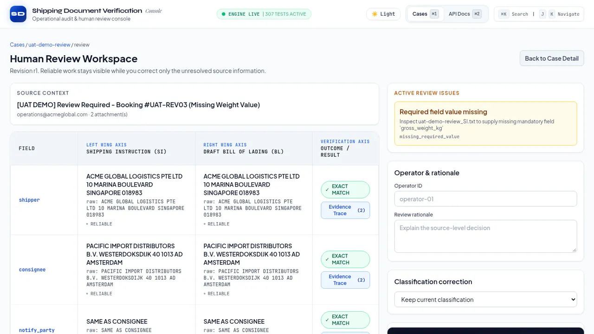

Hackathon project · 2026
SDOC
Shipping document verification: compares a Shipping Instruction with the carrier's draft Bill of Lading and routes doubtful cases to a person.
RepoLive demoFree hosting: the first load can take up to a minute

The problem
Before cargo ships, an operator checks the shipper's Shipping Instruction (SI) against the carrier's draft Bill of Lading (BL). Parties, ports, container count and weight all have to agree, and the documents arrive as email attachments in mixed formats. A false "all clear" is the expensive mistake, so the system has to say when it is not sure instead of guessing.
What it does
- Reads an inbound email and decides whether it is a document-comparison request.
- Works out which attachment is the SI and which is the BL (.txt, .docx, .xlsx or .pdf).
- Extracts seven fields: shipper, consignee, notify party, port of loading, port of discharge, container count and gross weight (kg).
- Compares them field by field as MATCH or MISMATCH; missing or ambiguous values become NEEDS_REVIEW instead of a clean result.
- A React console with a case list, case detail and a review workspace where a person corrects a value and records a rationale.
How it works
- 1 · ClassifyDeterministic rules first. Only if they are inconclusive and an LLM adapter is attached is the model asked.
src/pipeline/stage1_classify.py - 2 · Bind rolesDecide which document is the SI and which is the BL.
stage2_role_binding.py - 3 · ExtractParse the attachment and normalise text and units for the seven fields.
src/parsers · src/normalization - 4 · CompareOne strategy per field: exact text, container count, gross weight.
src/comparator - 5 · ReviewUnresolved cases open a review issue. A correction creates a new revision and the fields are compared again.
src/hitl
FastAPI app in app.py; React 18 console in frontend/.

The live demo runs on synthetic test cases, not real shipping data.
Hard parts and decisions
- Rules first, LLM optional
- The classifier tries deterministic rules before anything else, and field comparison is always rule-based. The Gemini adapter is optional and not attached by default, so a normal run stays on the rule path and sends unresolved cases to review.
- Evidence must be quoted
- When the model is used, every piece of evidence it claims has to appear word for word in the source text. High confidence does not override an ungrounded quote.
- "About 22,000 kg" is not a number
- Weights containing words such as APPROX, ABOUT, TBD or N/A, or ranges such as "20 to 22", are rejected as ambiguous instead of being parsed into a clean value. Metric tons are converted to kilograms.
- Revisions, not overwrites
- A review update must name the revision it was made against; a stale update is rejected. Each accepted correction becomes a new revision with its own evidence record.